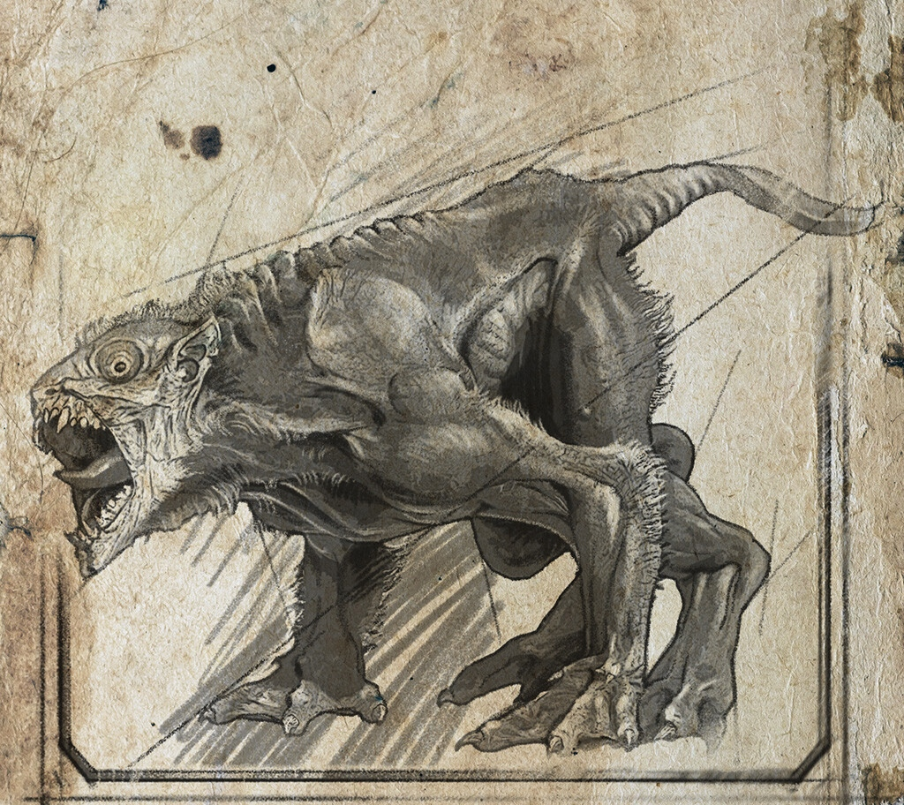
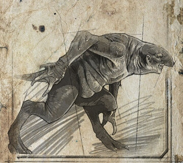
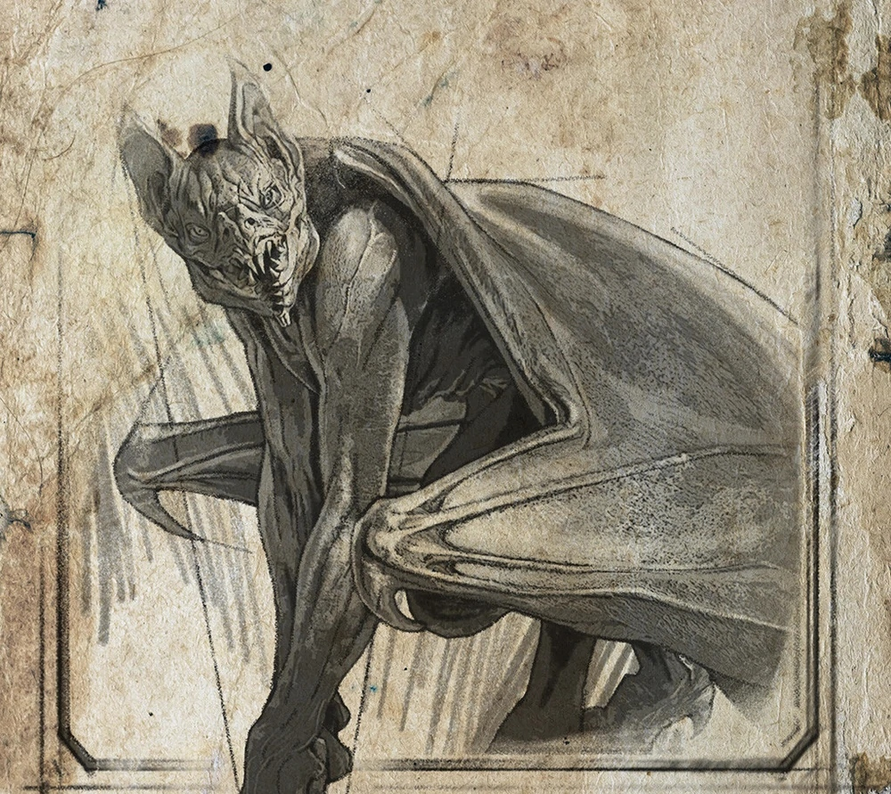
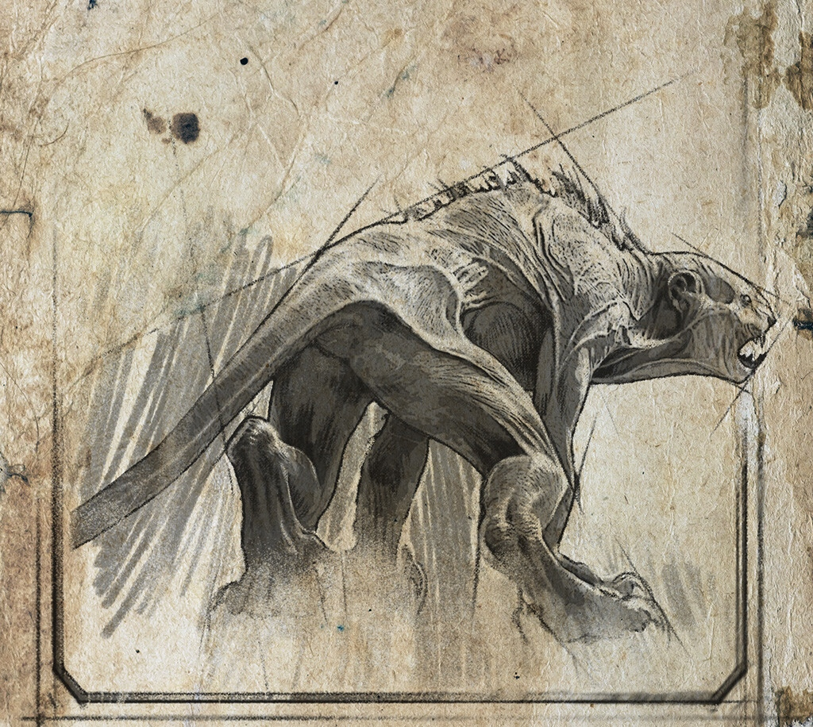

METRO 2033
~К существам, которые являются основными противниками в данной игре (кроме людей), относятся мутанты. Они возникают в результате мутаций, вызванных радиацией, химическим и биологическим оружием. Некоторые из этих существ покрыты тёмной шерстью, что делает их сильнее и крепче, чем их бледные родственники.~
В игре встречаются следующие виды мутантов:
Стражи, которые напоминают волков и крыс и живут на поверхности.

Упыри, которые напоминают свиней и могут делать мощные прыжки на большие расстояния.

Носачи, которые похожи на упырей, но у них есть кожистая перепонка для планирования, как у летающих белок. Они могут оглушать своих жертв ультразвуком.
Демоны, которые являются крылатыми монстрами, обитающими на поверхности. Они могут схватить героя и унести в небо, возможно, являются мутировавшими летучими мышами.

Лианы - это живые растения, свисающие с потолка и сильно бьющие. Они обитают на поверхности и невозможно убить их, но можно заставить скрутиться, выстрелив в них.
Кикиморы - это мутировавшие крысы. Они отсутствуют как враги во второй части игры, но можно увидеть их в заброшенных строениях, разбегающихся и прячущихся при приближении к ним.

Библиотекари- это разумные гуманоидные мутанты, обитающие в Библиотеке имени Ленина. Если смотреть на них в глаза, они не будут атаковать.
Чёрные — разумные существа. Они способны читать мысли человека на расстоянии и управлять его сознанием.
Амёбы - это мутировавшие кислотные шары, которые взрываются при контакте с человеком.
Биомасса - это мутировавший симбиоз бактерий, который находится на нижних уровнях Д-6.
Орложуки - это покрытые панцирями упыри со светящими глазами, обитающие в подземельях Д-6.
{kind=link}
{kind=link}
{kind=link}
{kind=link}
{kind=link}
{kind=link}
{kind=link}
{kind=link}
{kind=link}
{kind=link}
{kind=link}